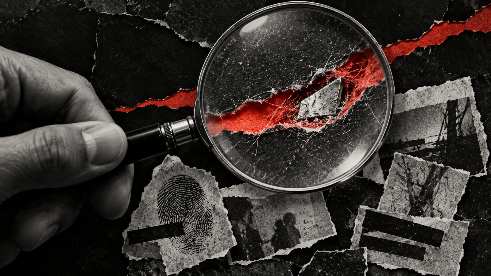
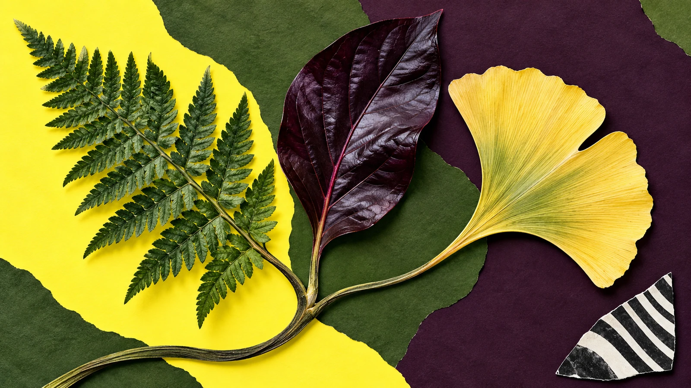
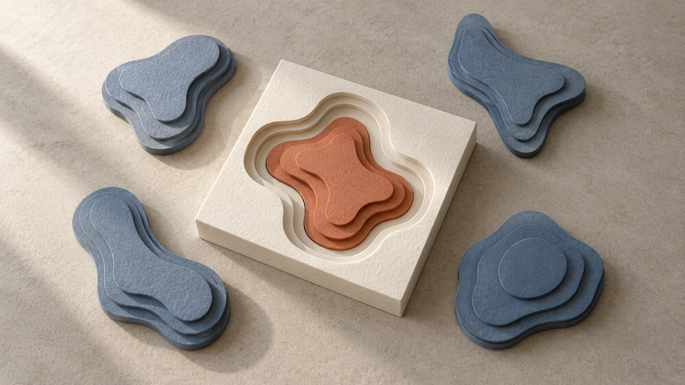
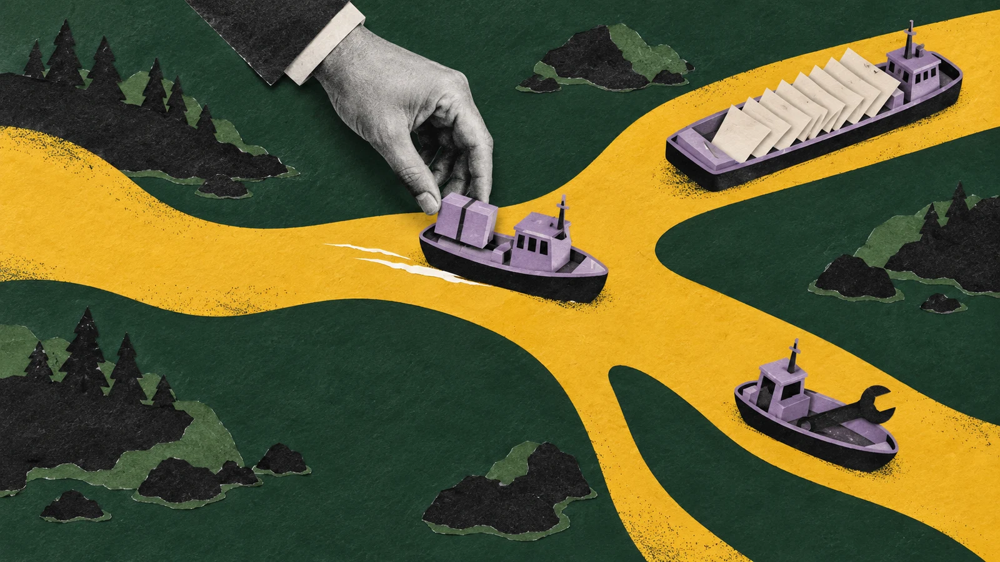
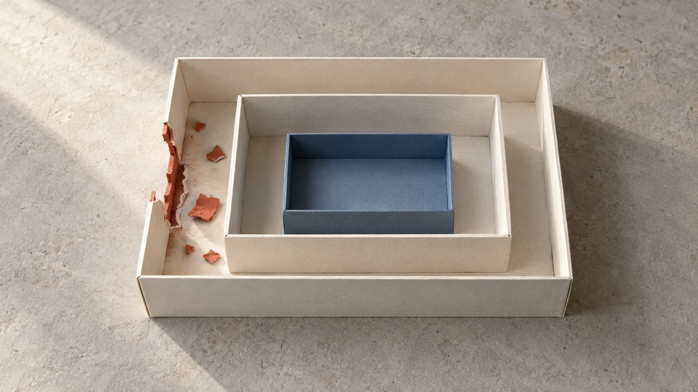
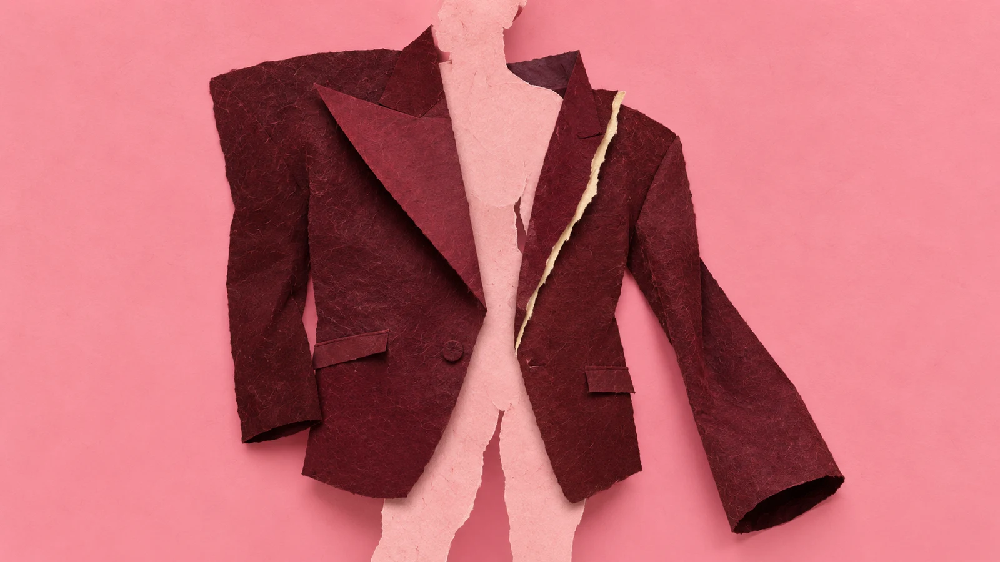

ExploitHunter

Proof under the glass
Bold legible lens silhouette at small sizes. Human hand and gritty photocopy residue depart strongly from the earlier mechanical stock models. The scraps are metaphorical collage, not claimed screenshots or captured evidence.
Compare with previous proposal

Semantic Vector Search

A family of unlike leaves
Vivid organic silhouettes and saturated paper fields read immediately at small sizes. Shared stem is an editorial metaphor for related meaning, not a botanical specimen or factual taxonomy.
Compare with previous proposal

Don't Fear the Model Router

A hand at the harbour fork
Accepted as a distinct initial proposal. No accidental text or logos. A strong mustard fork and photographic hand contrast with the rejected ivory tray. The vessels have dimensional folds, but the image overall is a graphic flat collage rather than a miniature apparatus. The parcel transfer makes choice visible; it does not pretend to show measured model performance.
Compare with previous proposal

Into the Breach
The damage stops at the outer skin
Wide keeps torn foreground skin and intact amber-lit baffle together. A central square crop can communicate texture and breach but narrows the damage boundary; regenerate a square companion before promotion. A shallow 2.25:1 crop retains the central relationship but clips peripheral fragments.
Compare with previous proposal

Fight Evils with Evals!

Benchmark tuxedo, wrong fit
Fashion editorial metaphor from the article opening. Pink/burgundy frontal oversized composition breaks the first batch's engineering-tabletop formula. Jacket reads at small sizes; fresh square should retain the displaced sleeve and silhouette.
Compare with previous proposal